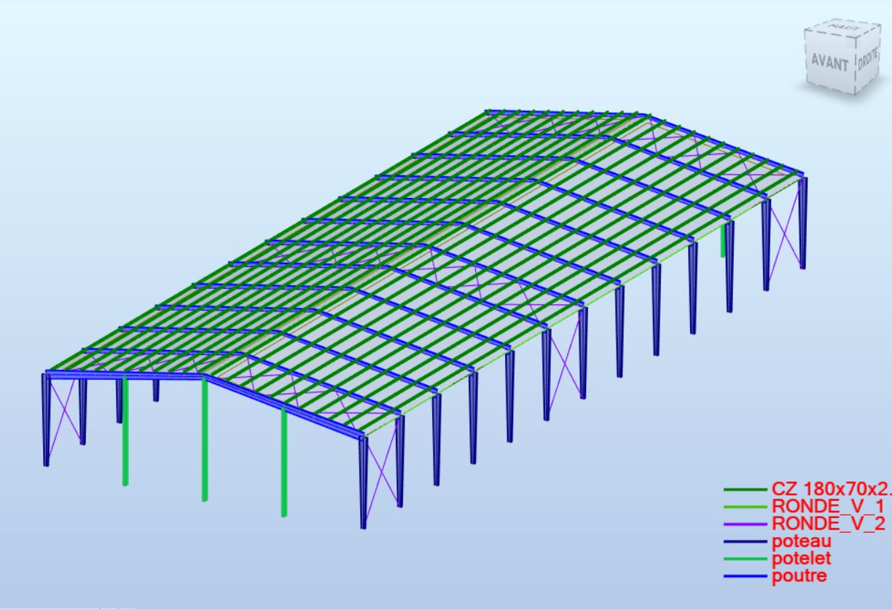
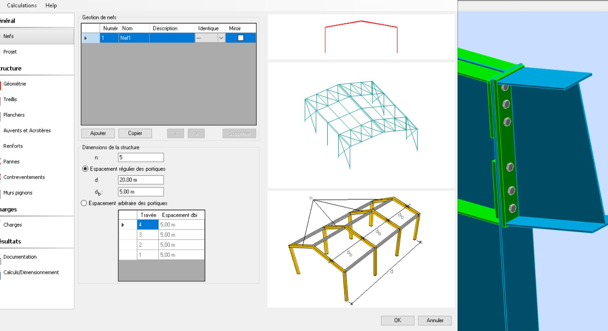

Offre de services en génie civil
Conception, Calcul, Projection et suivi des projets de charpente métallique
- Solutions personnalisées répondantà vos besoins spécifiques.
- Utilisation des dernières technologies pour des calculs précis de charges et des contraintes, garantissant la solidité de vos ouvrages.
- Analyse rigouse assurant la stabilité et la sécurité de vos structures face à toutes les sollicitations.
- Elaboration des plans détaillés avec une précision impeccable.
Projets réalisés en tant que Freelancer
Depuis 2012
- Vérification de stabilité, de résistance et calcul des semelles des panneaux d'affichages en charpente méatallique avec des portes-écrans de 9, 12 et 32 m².
- Rénovation de la station-service gd r 3044 Djanet à Illizi (calcul charpente métallique et béton armé).
- Conception et calcul de la charpente métallique d'une salle de sport à illiz.
- Conception & calcul de charpente métallique d'une de fabrication industrielle de produits manufacturés en béton à Ghardaia.
- Calcul et dimensionnement de la couverture en charpente métallique de l'hopitale Tirichine Brahime à Ghardaia (6000m2 de surface).
- Elaboration de devis et métré d'un entrepot frigorifique à Adrar.
- Vérification de la stabilité et de la résistance d'un entrepôt frigorifique pour supporter des équipements suspendus sur les fermes - Metlili.
- Vérification de stabilité et de résistance de la toiture d'une usine de production d'insuline pour supporter l'installation de panneaux solaires - Blida.
Projets réalisés en tant que chef projet chez la direction des équipements publics de Ghardaia
Depuis 2012
- Suivi de la réalisation d'un hopital de 240 lits à Ghardaia.
- Suivi de la réalisation d'une établissement de réeducation à Ghardaia.
- Suivi de la réalisation des écoles prémaires,écoles fondamentales, lycées, travaux d'aménagements, etc.
- Suivi de la réalisation des institus de 5000 places pédagogiques à Ghardaia.
- Suivi de la réalisation d'une résidence universitaires de 200 lits à Ghardaia.
- Elaboration des devis et des cahiers de charges.
- Maitriser toutes les démarches administratives afin de lancer une offre que ce soit réalisation, étude, expertise ou étude du sol.

